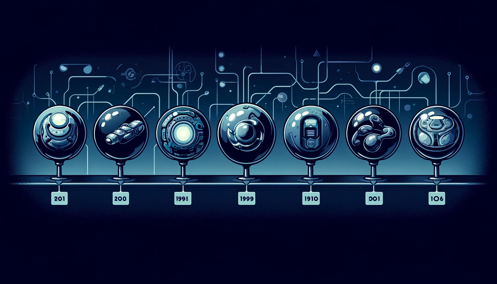

Graph Neural Networks: Revolutionizing DDoS Attack Detection
Introduction
What are Graph Neural Networks?
Learn about the fundamentals of GNNs and their applications.
GNNs vs Traditional Neural Networks
Discover the key differences between GNNs and traditional neural networks.
Simple GNN Code in DGL
Explore a simple code example of implementing GNNs using the DGL library.
Evolution of GNNs

Milestones in GNN evolution
Adoption of GNN
Understanding DDoS Attacks
What is a DDoS Attack?
Notable Example of DDoS Attack Impact
Traditional vs. GNN Approaches in DDoS Detection